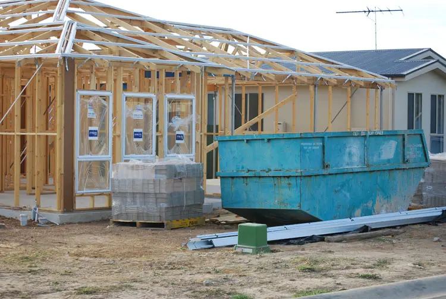
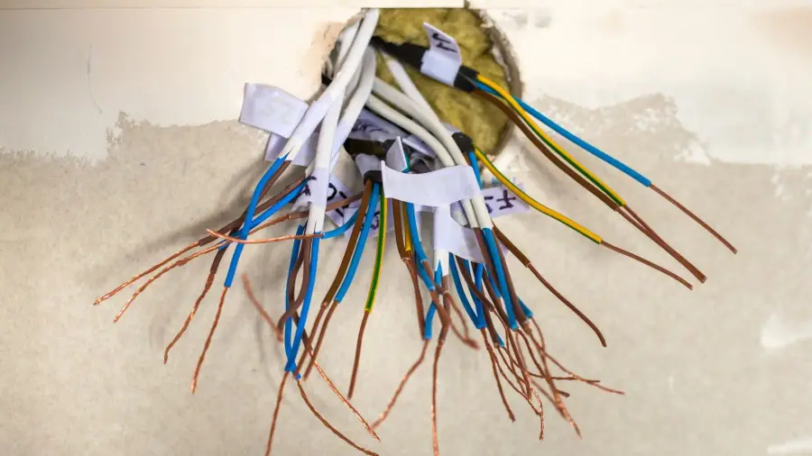

Everything in the app
KKamera replaces your phone's camera for work. It takes the shot, marks it up and sends it to the right cloud. If there's no signal, it waits and sends it later.
Five ways to shoot
Pick a mode from the strip under the viewfinder. Every mode uploads the same way.
- PHOTO
- Standard shots, with burst mode for 3, 5 or 10 frames.
- VIDEO
- 720p, 1080p or 4K, in H.264 or HEVC. Set a limit of 30 seconds, 1, 5 or 10 minutes.
- PANO
- Sweep the phone and KKamera takes a frame every 12°, up to 180°, then stitches the panorama.
- DOC
- Scans invoices, plans and compliance certificates as clean, flat pages.
- INTERVAL
- Takes a shot every 2 seconds while you work hands-free.
On the viewfinder you also get flash (off, on, auto, or a white screen flash for selfies) and zoom down to 0.5× on phones with an ultra-wide lens. There's a 3 or 10 second timer with an optional voice countdown, and the volume buttons work as a shutter.

| Framing aid | What it's for |
|---|---|
| Spirit level | A horizon guide on the viewfinder. The phone gives a small haptic tick when it's level, so tiles, frames and switchboards come out straight. |
| Grids | 3×3, golden ratio, square and diagonal overlays. |
| Filters | Vivid, Warm, Cool, B&W, Fade and Noir, plus Beauty, Smooth, Glow and Porcelain portrait filters. |
| Clip-on lenses | An upside-down preview option for clip-on lenses that flip the image. |
Photos that prove when and where
For defects, variations and compliance, a photo is only useful if you can show when and where it was taken. KKamera can record that in two places.
- Burned-in stamp
- Writes the date, time, location and compass bearing into the image itself, so it survives a screenshot or a print.
- GPS in EXIF
- Saves latitude and longitude in the file's metadata.
- Compass bearing
- Records the direction the camera faced, so you can tell the north wall from the south.
- Strip EXIF
- Or go the other way: remove all metadata before upload when location shouldn't travel with the file.

12 Crown St, Wollongong NSW
−34.4251, 150.8936 · S 184°
| EXIF field | Written when | Example |
|---|---|---|
GPSLatitude / GPSLongitude | "Embed GPS" is on | 34° 25′ 30″ S, 150° 53′ 37″ E |
GPSImgDirection | "Compass bearing" is on | 184.0° |
| All fields removed | "Strip EXIF" is on | No metadata leaves the phone |
Circle the problem before it uploads
Turn on markup and each photo opens for a quick sketch before it's sent. Pick a colour and brush size, draw, undo, done.
- Both
- Upload the marked-up copy and the original.
- Marked only
- Only the copy with your drawing.
- Original only
- Draw to explain on the spot, then keep just the clean photo.
Markup is off by default. Switch it on in Settings → Upload. Burst shots skip markup so you can fire off a sequence quickly.
Seven kinds of storage
Connect one account or several. Each connection has its own upload folder, /KKamera by default, and KKamera creates nested folders for you.
- All accounts
- Every shot goes to every connected cloud. Useful for a business copy and a backup.
- Selected
- Choose which connections receive uploads.
- Don't upload
- Pause uploads and keep photos on the phone.
Each connection has Test, Edit and Remove buttons. The camera screen also has a shortcut that opens your cloud's app or website.
| Storage | How you connect |
|---|---|
| Google Drive | Sign in with Google |
| Microsoft OneDrive | Sign in with Microsoft |
| Dropbox | Sign in with Dropbox |
| Synology NAS | Server address and login, over WebDAV |
| Nextcloud | Server address and an app password |
| WebDAV (ownCloud, Seafile and others) | Server address and login |
| FTP and FTPS | Host, port and login |
No signal? Keep shooting.
Every capture goes into an upload queue first. If there's no connection, or you've set Wi-Fi only, it waits on the phone and uploads when it can.
- Wi-Fi only
- Save mobile data. Captures wait until you're on Wi-Fi.
- Confirm first
- Review each shot before it uploads.
- History
- See every upload as done, partial, failed, queued or uploading. Retry or discard queued items.
- Status badge
- A badge on the camera screen shows each result. Tap it to open History.
 IMG_0614.jpgGoogle Drive · 09:14Done
IMG_0614.jpgGoogle Drive · 09:14DoneYour phone, your rules
Client sites, keys, alarm panels: some photos shouldn't be one tap away for anyone holding your phone.
- App lock
- Open KKamera with Face ID, a fingerprint or a PIN.
- Two-factor sign-in
- Authenticator app codes, with backup codes for a lost phone.
- Witness Mode
- Emails a contact you choose after each successful upload, so someone else knows a record exists.
- Panic Wipe
- Disconnects every cloud, clears upload history and signs you out.
- Sign out everywhere
- End sessions on your other devices, change your password or delete your account from the app.
Bring your crew, earn free years
Every account gets a referral code and share link. Invite co-workers by email or straight from your contacts. Each person who joins uses their own cloud account.
Every 5 people who sign up with your code and pay earns you 1 free year. There's no limit. If someone refunds or stops paying, their referral stops counting.
Total referrals, how many count, years earned and your progress to the next free year.
24 hours. No credit card.
Then $30 a year. For early access, email development@koastal.com.au.